import arviz as az
import pymc as pm
import preliz as pz
import numpy as np
import scipy.stats as stats
import pandas as pd
import matplotlib.pyplot as pltProgramación probabilista
az.style.use('arviz-doc')%%javascript
IPython.OutputArea.prototype._should_scroll = function(lines) {
return false;
}Objetivos de este capítulo
- Construir modelos con PyMC
- Analizar modelos con PyMC y ArviZ
- Explorar formas alternativas de interpretar el a posteriori
- La importancia del tamaño del efecto vs la irrelavancia de la significancia.
- Aprender sobre modelos jerárquicos
- agrupamiento-parcial
- efecto de contracción
Programación probabilística
Nuestros golems raramente tienen forma física, pero a menudo están hechos de arcilla y viven in silicio como código de computadora -Richard McElreath
La estadística Bayesiana es conceptualmente muy simple, tenemos lo conocido y lo desconocido. El teorema de Bayes se utiliza para condicionar lo desconocido usando lo conocido, si tenemos suerte este proceso conducirá a una reducción de la incertidumbre sobre lo desconocido. Por lo general nos referimos a lo conocido como datos y los consideramos fijo mientras que lo desconocido toma la forma de parámetros de distribuciones de probabilidad. La simpleza conceptual para formular modelos Bayesianos contrasta con la dificultad matemático/computacional para resolverlos. Por muchos años esto fue un verdadero problema y retrasó la adopción de métodos Bayesianos.
A fin de poder resolver los modelos Bayesianos se recurre a métodos numéricos que pueden ser considerados como motores universales de inferencia. El hecho que tales motores sean posibles ha motivado el surgimiento de la programación probabilística, este tipo de lenguajes permiten una separación clara entre la creación de los modelos y el proceso de inferencia.
Un lenguaje de programación probabilístico es, en lineas generales, un lenguaje que le permite al usuario describir, en una pocas lineas de código (las necesarias para describir el modelo), un modelo probabilístico completo. Luego se procede a utilizar este modelo para realizar la inferencia de forma automática. Se espera que la programación probabilística tenga un gran impacto en estadística, machine learning y otras disciplinas al permitir que científicos construyan modelos complejos en menor tiempo y de forma menos propensa a errores.
Una buena analogía sobre el impacto que un lenguaje de programación puede tener en la ciencia es la introducción del lenguaje de programación Fortran hace más de 6 décadas. Fortran permitió a los científicos, por primera vez, abstraerse de muchos de los detalles computacionales y centrarse en la construcción de métodos numéricos, modelos y simulaciones de una manera más natural. De manera similar, se espera que los lenguajes de programación probabilísticos escondan del usuario detalles sobre cómo las probabilidades son manipuladas y cómo se lleva a cabo la inferencia, dejando que los usuarios se centren en la especificación del modelo y en el análisis e interpretación de los resultados.
Introducción a PyMC
PyMC es un paquete para programación probabilística bajo Python. PyMC es lo suficientemente madura para resolver muchos problemas estadísticos. PyMC permite crear modelos probabilísticos usando una sintaxis intuitiva y fácil de leer que es muy similar a la sintaxis usada para describir modelos probabilísticos.
La mayoría de las funciones de PyMC están escritas en Python. Mientras que las partes computacionalmente demandantes están escritas en NumPy y Aesara. Aesara es una biblioteca de Python que permite definir, optimizar y evaluar expresiones matemáticas que involucran matrices multidimensionales de manera eficiente. Aesara es hija de Theano una librería de Python originalmente desarrollada para deep learning (que es a su vez la antesesora de TensorFlow, PyTorch, etc).
El problema de la moneda, ahora usando PyMC y ArviZ
A continuación revisitaremos el problema de la moneda visto en el capítulo anterior, usando esta vez PyMC para definir nuestro modelo y hacer inferencia. Luego usaremos ArviZ para analizar el a posterori.
A continuación generaremos datos sintéticos, en este caso asumiremos que conocemos el valor the \(\theta\) y lo llamaremos theta_real, y luego intentaremos averiguar este valor como si no lo conocieramos. En un problema real theta_real sería desconocido y realizaríamos un proceso de inferencia precisamtente para averiguar su valor.
np.random.seed(123)
n_experimentos = 4
theta_real = .35 # en una situación real este valor es desconocido
datos = pz.Binomial(n=1, p=theta_real).rvs(size=n_experimentos)
datosarray([1, 0, 0, 0])Creación del modelo
Ahora que tenemos nuestros datos es necesario especificar el modelo. Para ello usaremos una distribución beta (con parámetros \(\alpha=\beta=1\)) como a priori y la distribución de Bernoulli como likelihood. Usando la notación usual en estadística tenemos:
\[\begin{align} \theta &\sim \operatorname{Beta}(\alpha=1, \beta=1)\\ Y &\sim \operatorname{Bin}(n=1, p=\theta) \end{align}\]
Cada uno de los elementos del array
datoses un experimento de Bernoulli, es decir un experimento donde solo es posible obtener dos valores (0 o 1) si en cambio tuviera el número total de “caras” obtenidas en varios experimentos de Bernoulli podríamos modelar el likelihood como una distribución Binomial.
Esto modelo se traduce casi literalmente a PyMC, veamos:
with pm.Model() as nuestro_primer_modelo:
θ = pm.Beta('θ', alpha=1, beta=1) # a priori
y = pm.Bernoulli('y', p=θ, observed=datos) # likelihood
#y = pm.Binomial('y',n=n_experimentos, p=θ, observed=sum(datos))En la primer linea hemos creado un nuevo objeto llamado nuestro_primer_modelo. Este objeto contiene información sobre el modelo y las variables que lo conforman. PyMC usa el bloque with para indicar que todas las lineas que están dentro de él hacen referencia al mismo modelo (que en este caso se llama nuestro_primer_modelo).
La segunda linea de código, especifica el a priori, como pueden ver la sintaxis sigue de cerca a la notación matemática, la única diferencia es que el primer argumento es siempre una cadena que especifica el nombre de la variable aleatoria (el nombre es usado internamente por PyMC), este nombre siempre deberá coincidir con el nombre de la variable de Python a la que se le asigna. De no ser así el código correrá igual, pero puede conducir a errores y confusiones al analizar el modelo.
Es importante recalcar que las variables de PyMC, como \(\theta\), no son números sino objetos que representan distribuciones. Es decir objetos a partir de los cuales es posible calcular probabilidades y generar números aleatorios.
En la tercer linea de código se especifica el likelihood, que como verán es similar a la linea anterior con la diferencia que hemos agregado un argumento llamado observed al cual le asignamos nuestros datos. Esta es la forma de indicarle a PyMC cuales son los datos. Los datos pueden ser números, listas de Python, arrays de NumPy o data_frames de Pandas.
Inferencia
Nuestro modelo ya está completamente especificado, lo único que nos resta hacer es obtener el a posteriori. En el capítulo anterior vimos como hacerlo de forma analítica, ahora lo haremos con métodos numéricos.
En PyMC la inferencia se realiza escribiendo las siguientes lineas:
with nuestro_primer_modelo:
idata = pm.sample(1000)Auto-assigning NUTS sampler...
Initializing NUTS using jitter+adapt_diag...
Multiprocess sampling (4 chains in 4 jobs)
NUTS: [θ]
100.00% [8000/8000 00:00<00:00 Sampling 4 chains, 0 divergences]
Sampling 4 chains for 1_000 tune and 1_000 draw iterations (4_000 + 4_000 draws total) took 1 seconds.Primero llamamos al objeto que definimos como nuestro modelo (nuestro_primer_modelo), indicando de esta forma que es sobre ese objeto que queremos realizar la inferencia. En la segunda linea le indicamos a PyMC que deseamos 1000 muestras. Esta linea luce inocente, pero internamente PyMC está haciendo muchas cosas por nosotros. Algunas de las cuales son detalladas en el mensaje que se imprime en pantalla.
Veamos este mensaje:
- La primer linea indica que PyMC ha asignado el método de muestreo NUTS, el cual es un muy buen método para variables continuas.
- La segunda linea nos da información sobre cómo se inicializaron los valores de NUTS. Un detalle que por ahora no nos preocupa.
- La tercer linea indica que PyMC correrá cuatro cadenas en paralelo, es decir generará cuatro muestras independientes del a posteriori. Esta cantidad puede ser diferente en sus computadoras ya que es determinada automáticamente en función de los procesadores disponibles (que en mi caso, 4).
sampletiene un argumentochainsque permite modificar este comportamiento. - La cuarta linea indica qué variable ha sido asignada a cual método de muestreo. En este caso la información es redundante, ya que tenemos una sola variable, pero esto no siempre es así. PyMC permite combinar métodos de muestreo, ya sea de forma automática basado en propiedades de las variables a muestrear o especificado por el usuario usando el argumento
step. - La quinta linea es una barra de progreso con varias métricas sobre la velocidad del muestreo, que en este caso (y para referencia futura) es muy alta. Tambiém indica la cantidad de cadenas usadas y la cantidad de divergencias. Tener 0 divergencias es ideal, más adelante discutiremos la razón.
- Por último tenemos un detalle de la cantidad de muestras generadas, aunque pedimos 1000 obtuvimos 8000, la razón es que es son 1000 por cadena (4 cadenas en mi caso), es decir 4000. Todavía nos queda explicar 4000 muestras extras, estas se corresponden a 1000 por cadena y son muestras que PyMC utiliza para auto-tunear el método de muestreo. Estás muestras son luego descartadas automáticametne ya que no son muestras representativas del posterior. La cantidad de pasos que se usan para tunear el algoritmo de muestro se puede cambiar con el argumento
tunede la funciónpm.sample(.).
Resumiendo el a posteriori
Por lo general, la primer tarea a realizar luego de haber realizado un muestreo es evaluar como lucen los resultados. La función plot_forestplot de ArviZ es muy útil para esta tarea.
az.plot_forest(idata, combined=True, figsize=(6, 2));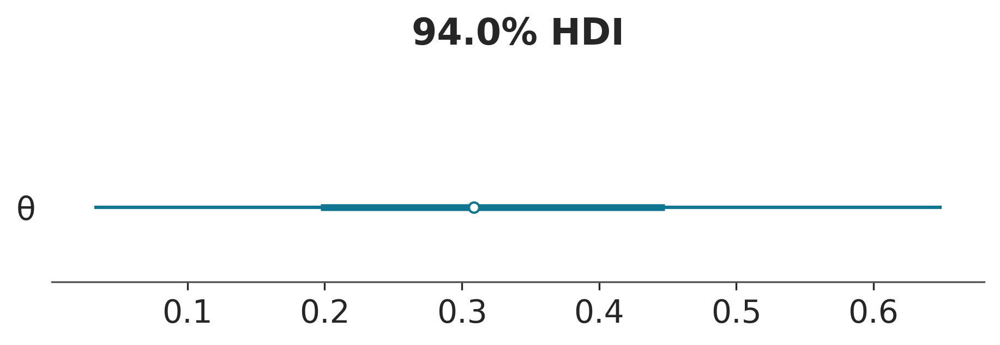
El punto indica la media, la linea gruesa el rango intercuartial y las lineas finas el HDI 94%
Es importante notar que la variable
yes una variable observada, es decir conocida. Mientras que en gráfico anterior estamos dibujando solo \(\theta\) que es la única variables desconocida, y por lo tanto muestreada.
Si quisieramos un resúmen numérico de los resultados podemos usar:
az.summary(idata, kind="stats")| mean | sd | hdi_3% | hdi_97% | |
|---|---|---|---|---|
| θ | 0.333 | 0.174 | 0.046 | 0.657 |
Como resultado obtenemos un DataFrame con los valores de la media, la desviación estándar y el intervalo HDI 94% (hdi_3 hdi_97).
Otra forma de resumir visualmente el a posteriori es usar la función plot_posterior que viene con ArviZ, ya hemos utilizado esta distribución en el capítulo anterior para un falso a posteriori. Vamos a usarlo ahora con un posterior real. Por defecto, esta función muestra un histograma para variables discretas y KDEs para variables continuas. También obtenemos la media de la distribución (podemos preguntar por la mediana o moda usando el argumento point_estimate) y el 94% HDI como una línea negra en la parte inferior de la gráfica. Se pueden establecer diferentes valores de intervalo para el HDI con el argumento hdi_prob. Este tipo de gráfica fue presentado por John K. Kruschke en su gran libro “Doing Bayesian Data Analysis”.
az.plot_posterior(idata);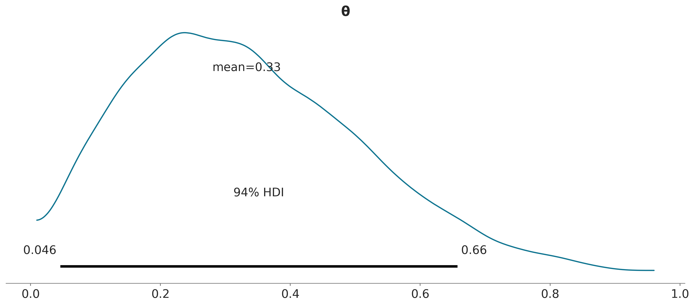
Decisiones basadas en el posterior
A veces describir el a posteriori no es suficiente, y es necesario tomar decisiones basadas en nuestras inferencias. Esto suele implicar reducir una estimación continua a una dicotómica: sí-no, enfermo-sano, contaminado-seguro, etc. Es posible, por ejemplo, que tengamos que decidir si la moneda está o no sesgada. Una moneda sesgada sería una que no caiga cara con probabilidad 0.5. Por lo tanto una forma de evaluar el sesgo es comparar el valor de referencia 0.5 contra el intervalo HPD. En la figura anterior, podemos ver que el HPD va de \(\approx 0.02\) a \(\approx 0.71\) y, por lo tanto, 0.5 está incluido en el HPD. Según el a posterioriri la moneda parece estar sesgada hacia las cecas, pero no podemos descartar por completo el valor de 0.5. Si esta conclusión nos deja sabor a poco entonces tendremos que recopilar más datos para así reducir la varianza del a posteriori o buscar información para definir un a priori más informativo.
ROPE
Estrictamente la probabilidad de observar el valor exacto de 0.5 es nula, además en la práctica no nos suele interesar tener precisión infinita si no que solemos tener una idea del rango de error que es tolerable o despreciable. Una posibilidad consiste en definir lo que se conoce como región de equivalencia práctica o ROPE (Region Of Practical Equivalence). Podríamos tener buenas razones para considerar que cualquier valor entre 0,45 y 0,55 es prácticamente equivalente a 0.5. No hay reglas generales para definir un ROPE ya que esta es una decisión contexto-dependiente. Para algunos problemas 0.05 podría ser mucho para otros poco, en algunos casos un rango simétrico es útil en otros es una mala idea.
Ya establecido la ROPE podemos usar las siguientes reglas para tomar una decisión:
El valor de un parámetro es considerado improbable (o rechazado) si la totalidad de la ROPE cae por fuera del HPD 94% del parámetro en cuestión.
El valor de un parámetro es aceptado si la ROPE contiene por completo al HPD 94% del parámetro en cuestión.
Una ROPE es un intervalo arbitrario que se determina usando conocimiento previo y relevante sobre un tema. Cualquier valor dentro de este inervalo es considera equivalente.
Usando la función plot_posterior de ArviZ, podemos graficar el posterior junto con el HPD y la ROPE.
az.plot_posterior(idata, rope=[0.45, .55]); 
Otra herramienta que nos puede asistir en la toma de decisiones es comparar el a posteriori con un valor de referencia. La función plot_posterior también nos permite hacer esto:
az.plot_posterior(idata, ref_val=0.5);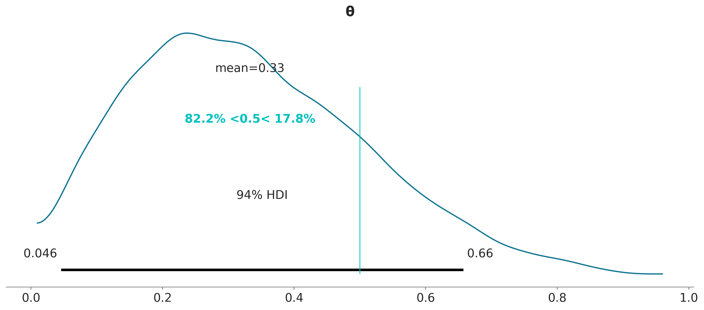
El valor de referencia está indicado con una linea turquesa, junto con la proporción del posterior por debajo y por arriba del valor de referencia.
Para una discusión más detallada del uso de la ROPE pueden leer el capítulo 12 del gran libro “Doing Bayesian Data Analysis” de John Kruschke. Este capítulo también discute cómo realizar pruebas de hipótesis de forma Bayesiana y los problemas de realizar este tipo de análisis, ya sea de forma Bayesiana o no-Bayesiana.
Funciones de perdida
Una alternativa más formal al uso de las ROPEs son las Funciones de pérdida. Para poder tomar la mejor decisión posible es necesario tener la mejor descripción posible de un problema y luego una evaluación correcta de los costos y beneficios. Bajo el marco Bayesiano lo primero implica obtener una distribución a posteriori, lo segundo se puede conseguir mediante la aplicación de una función de perdida. Una función de perdida es una forma de medir cuan distinta es una estimación respecto del valor real (o de referencia) de un parámetro. Algunos ejemplos comunes son:
- La perdida cuadrática \((\theta - \hat \theta)^2\)
- La perdida absoluta $|- | $
- La perdida 0-1 \(I(\theta \ne \hat{\theta})\) siendo \(I\) la función indicatriz
La función de perdida (o su inversa) reciben diversos nombres según el campo de aplicación como funciones de costo, funciones objetivo, funciones de fitness (sic), funciones de utilidad, etc.
En la práctica generalmente desconocemos el valor correcto de \(\theta\) y a duras penas tendremos un posterior adecuado, por lo tanto lo que se hace es tratar de encontrar el valor de \(\hat \theta\) que minimice el valor esperado de la función de perdida. Esto implica promediar la función de perdida sobre todo el posterior, promediamos sobre el posterior porque desconocemos el valor de \(\theta\).
En el siguiente ejemplo tenemos dos funciones de pérdida. La función absoluta lossf_a y la cuadrática lossf_b. Evaluamos cada una de las funciones para distintos valores de \(\hat \theta\) sobre una grilla de 500 puntos y encontramos el mínimo.
_, ax = plt.subplots(1)
grid = np.linspace(0, 1, 500)
θ_pos = az.extract(idata, var_names='θ')
lossf_a = [np.mean(abs(i - θ_pos)) for i in grid]
lossf_b = [np.mean((i - θ_pos)**2) for i in grid]
for i, (lossf, c) in enumerate(zip([lossf_a, lossf_b], ['C0', 'C1'])):
mini = np.argmin(lossf)
ax.plot(grid, lossf, c)
ax.plot(grid[mini], lossf[mini], 'o', color=c, label=f"función de perdida {['a','b'][i]}")
pos = (np.max(lossf) - np.min(lossf)) * 0.05
ax.annotate(f"{grid[mini]:.2f}", (grid[mini], lossf[mini] + pos), color=c)
ax.set_yticks([])
ax.set_xlabel(r'$\hat \theta$')
ax.legend()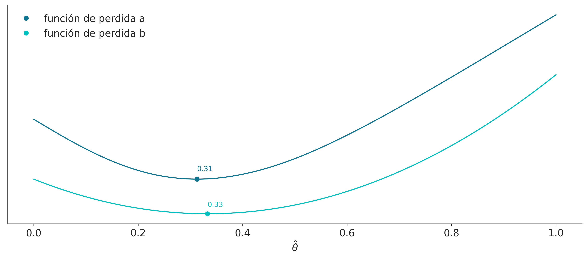
Las curvas son similares entre sí e incluso los mínimos son simialres, \(\hat{\theta} \approx 0.31\) para lossf_a y \(\hat{\theta} \approx 0.33\) para lossf_b
Lo que es interesante es que el primer valor se corresponde con la mediana del posterior y el segundo con su media.
np.median(θ_pos).item(), np.mean(θ_pos).item()(0.3130652518233671, 0.33292653125228294)Si bien esto no es una prueba formal, espero que haya sido un ejemplo lo suficientemente claro como para ilustrar el mensaje más importante de esta sección:
Diferentes funciones de pérdida se relacionan con diferentes estimaciones puntuales
Por lo tanto, si queremos ser formales al momento de computar una estimación puntual, debemos decidir qué función de costo utilizar. O a la inversa, si elegimos una estimación puntual implicitamente estamos eligiendo una función de pérdida.
La ventaja de elegir explicitamente una función de perdida es que podemos ajustarla a las necesidades de un problema particular, en vez de utilizar un criterio predefinido. En muchos casos el costo asociado a una toma de decisión es asimétrico, esto es común en salud pública como sucede con vacunas o con la interrupción voluntaria del embarazo; procedimientos simples, baratos y seguros que previenen una gran cantidad de inconvenientes con un bajo riesgo de complicaciones.
Dado que, en general, el a posteriori toma la forma de muestras finitas almacenadas en una computadora, es posible escribir código que refleje funciones de perdidas sin necesidad de estar acotado por la conveniencia matemática o la simplicidad. El siguiente es un ejemplo bastante pavo de esto.
lossf = []
for i in grid:
f = np.cos(i) * (1-i) + np.sin(i) * (i)
lossf.append(f)
mini = np.argmin(lossf)
plt.plot(grid, lossf)
plt.plot(grid[mini], lossf[mini], 'o')
pos = (np.max(lossf) - np.min(lossf)) * 0.05
plt.annotate(f"{grid[mini]:.2f}", (grid[mini], lossf[mini] + pos))
plt.yticks([])
plt.xlabel(r'$\hat \theta$');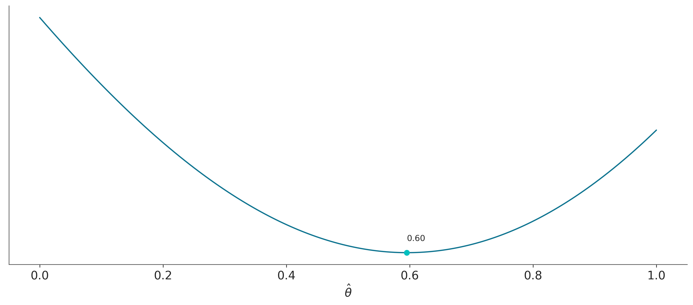
Ahora bien, en la práctica no es cierto que todo el mundo elija una estimación puntual porque realmente acuerda, o tiene presente, alguna función de perdida en particular, en general la elección es por conveniencia, o tradición. Se usa la mediana porque es más robusta que la media a valores extremos o se usa la media porque es un concepto familiar y simple de entender, o porque pensamos que tal o cual observable es realmente un promedio de algún fenómeo subyacente (como moléculas golpeandose entre sí o genes interactuando con el ambiente).
Modelos Multiparamétricos
Prácticamente todos los modelos de interés en estadística, son multiparamétricos, es decir modelos con más de un parámetro.
Suele suceder que no todos los parámetros requeridos para construir un modelo son de interés, supongamos que quisiéramos estimar el valor medio de una distribución Gaussiana, a menos que sepamos el valor real de la desviación estándar, nuestro modelo deberá contener un parámetro para la media y uno para la desviación estándar. Los parámetros que no son de inmediato interés pero son necesarios para definir un modelo de forma completa se llaman nuisance parameters (o parámetro estorbo).
En estadística Bayesiana todos los parámetros tienen el mismo estatus, por lo que la diferencia entre nuisance o no nuisance no es fundamental bajo ningún concepto, sino que depende completamente de nuestras preguntas.
En principio podría parecer que incorporar parámetros que no nos interesan es un ejercicio de futilidad. Sin embargo, es todo lo contrario, al incorporar estos parámetros permitimos que la incertidumbre que tenemos sobre ellos se propague de forma adecuada a los resultados.
Inferencias lumínicas
A finales del siglo XIX Simon Newcomb realizó varios experimentos para determinar la velocidad de la luz. En uno de ellos Newcomb midió el tiempo que le tomaba a la luz recorrer 7442 metros.
A continuación se muestra sus resultados, 66 mediciones.
datos = np.array([248.28, 248.26, 248.33, 248.24, 248.34, 247.56, 248.27, 248.16,
248.4, 247.98, 248.29, 248.22, 248.24, 248.21, 248.25, 248.3,
248.23, 248.29, 248.31, 248.19, 248.24, 248.2, 248.36, 248.32,
248.36, 248.28, 248.25, 248.21, 248.28, 248.29, 248.37, 248.25,
248.28, 248.26, 248.3, 248.32, 248.36, 248.26, 248.3, 248.22,
248.36, 248.23, 248.27, 248.27, 248.28, 248.27, 248.31, 248.27,
248.26, 248.33, 248.26, 248.32, 248.32, 248.24, 248.39, 248.28,
248.24, 248.25, 248.32, 248.25, 248.29, 248.27, 248.28, 248.29,
248.16, 248.23])Si graficamos estas medidas veremos que la distribución parece Gaussiana excepto por dos medidas inusualmente bajas.
ax = az.plot_kde(datos, rug=True)
ax.set_yticks([]);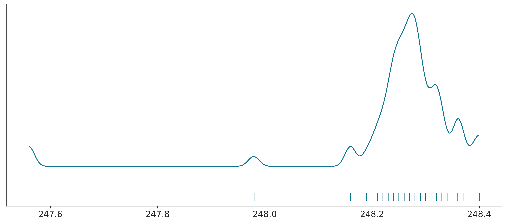
Por simplicidad vamos a suponer que los datos siguen una distribución Gaussiana, después de todo es lo que en general se esperaría, en general, al medir una misma cosa varias veces. Una distribución Gaussiana queda definida por dos parámetros, la media y la desviación estándar, como desconocemos estas dos cantidades necesitamos establecer dos a prioris uno para cada parámetro. Un modelo probabilístico razonable sería el siguiente.
\[\begin{align} \mu &\sim U(l, h) \\ \sigma &\sim \mathcal{HN}(\sigma_{\sigma}) \\ y &\sim \mathcal{N}(\mu, \sigma) \end{align}\]
Es decir, \(\mu\) proviene de una distribución uniforme entre los límites \(l\) y \(h\) y \(\sigma\) proviene de una media-normal (half-normal) con desviación estándar \(\sigma_{\sigma}\), esta distribución es como una Gaussiana pero restringida al rango \([0, \infty]\). Por último los datos \(y\), como dijimos anteriormente, proviene de una distribución normal, especificada por \(\mu\) y \(\sigma\).
Si desconocemos por completo cuales podrían ser los valores de \(\mu\) y de \(\sigma\), podemos fijar valores para los a prioris que reflejen nuestra ignorancia.
Para la distribución uniforme una opción podría ser un intervalo con límite inferior de 0 y superior de 1 segundo. El límite inferior de 0 tiene sentido ya que las velocidades no pueden ser negativas, el límite superior de un 1 segundo es un valor elevado en la escala de los datos. Otra posibilidad sería usar los datos como guía por ejemplo \((l=datos.min() / 100, h=l+datos.min() * 100)\). De esta forma garantizamos que el a priori contenga el rango de los datos pero que sea mucho más amplio, reflejando que no tenemos demasiado información para fijar un a priori de forma más precisa. Los Bayesianos puristas consideran usar los datos para estimar los a prioris ¡como alta traición! Ojo con las almas de cristal (¡en todo ámbito!).
Bajo ciertas condiciones los a prioris uniformes puede ser problemáticos, tanto desde el punto de vista estadístico como computacional, por lo que se recomienda evitarlos, en general se recomienda evitar a prioris con límites, como la distribución uniforme, a menos que tengamos información confiable sobre esos límites. Por ejemplo sabemos que las probabilidades están restringidas al intervalo [0, 1]. Pero no hay una buena razón para limitar la velocidad de la luz (bueno ¡no la había en los tiempos de Newcomb!).
En la siguiente celda podrán ver que he elegido un par de a prioris y hay otros comentados. Comparen cómo corre el modelo con los distintos a prioris, tanto en términos de los resultados como los tiempos y calidad del muestreo.
with pm.Model() as modelo_g:
# los a prioris
μ = pm.Uniform('μ', 240, 250)
#μ = pm.Normal('μ', 240, 100) # otro a priori alternativo
σ = pm.HalfNormal('σ', sigma=1)
#σ = pm.HalfNormal('σ', sigma=datos.std() * 100)
# el likelihood
y = pm.Normal('y', mu=μ, sigma=σ, observed=datos)
idata_g = pm.sample()Auto-assigning NUTS sampler...
Initializing NUTS using jitter+adapt_diag...
Multiprocess sampling (4 chains in 4 jobs)
NUTS: [μ, σ]
100.00% [8000/8000 00:01<00:00 Sampling 4 chains, 0 divergences]
Sampling 4 chains for 1_000 tune and 1_000 draw iterations (4_000 + 4_000 draws total) took 1 seconds.Como se puede ver el plot-posterior tiene ahora dos subpaneles, una por cada parámetro. Cada uno se corresponde a una variable marginal del a posteriori que en este caso es bi-dimensional.
az.plot_posterior(idata_g);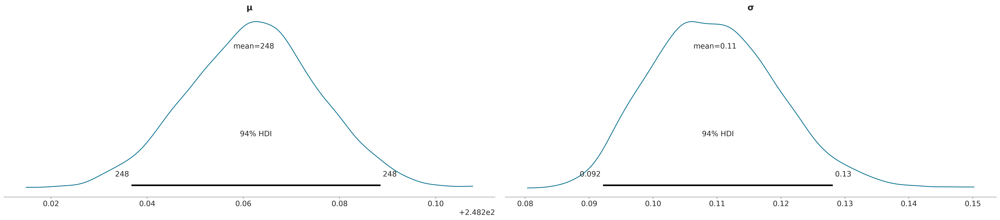
La siguiente figura muestra la distribución a posteriori (que como ya mencionamos en bidimensional), junto con las distribuciones marginales para los parámetros \(\mu\) y \(\sigma\).
az.plot_pair(idata_g, kind='kde', marginals=True);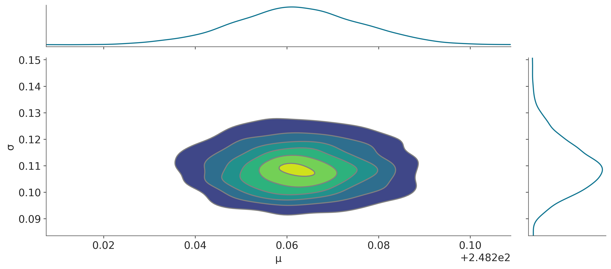
Una vez computado el a posteriori podemos realizar diversos cálculos a partir de él. Uno de esos cálculos consiste en simular datos (\(\tilde{y}\)). Matemáticamente lo que queremos calcular es:
\[\begin{equation} p(\tilde{y} \,|\, y) = \int p(\tilde{y} \,|\, \theta) \, p(\theta \,|\, y) \, d\theta \end{equation}\]
donde:
\(y\) son los datos observados mientras que \(\theta\) corresponde a los parámetros del modelo.
Siguiendo el ejemplo de la velocidad de la luz, \(\theta\) corresponde a \(\mu\) y a \(\sigma\). Computacionalmente podemos obtener \(\tilde{y}\) de la siguiente forma:
- Elegimos una muestra al azar de las generadas por PyMC (un valor para \(\mu_i\) y \(\sigma_i\))
- Generamos un dato sintético usando el mismo likelihood que usamos en el modelo, en este caso \(\tilde{y_i} \sim N(\mu_i, \sigma_i)\)
- Repetimos 1 y 2 hasta obtener la cantidad requerida de muestras.
Usando PyMC podemos calcular esto llamando a la función sample_ppc. El siguiente código devuelve 100 predicciones cada una de ellas de igual tamaño al de los datos.
ppc_g = pm.sample_posterior_predictive(idata_g, model=modelo_g)Sampling: [y]
100.00% [4000/4000 00:00<00:00]
Los datos simulados los podemos usar para compararlos con los datos observados y de esta forma evaluar el modelo. Esto se conoce como prueba predictivas a posteriori, como ya adelantamos algo en el capítulo anterior. En la siguiente gráfica la linea negra corresponde a los datos observados mientras que las lineas azules (semitrasparentes) corresponden a datos predichos por el modelo.
az.plot_ppc(ppc_g, num_pp_samples=200);
Según la gráfica anterior ¿Cuán bueno considerás que es nuestro modelo?
Modelos robustos
Un problema con el modelo anterior es que asume una distribución normal pero tenemos dos puntos que caen muy alejados de los valores medios. Esos puntos podrían estar alejados debido a errores experimentales en la toma de esos dos datos o podría haber un error al registrarlos o al trascribirlos. Si algo de esto sucedió podríamos justificar su eliminación de nuestro conjunto de datos (dejando registro de la eliminación y de las razones por las cuales lo hicimos). Otra opción es usar el rango inter-cuartil (u otro método estadístico) para declarar esos dos puntos como datos aberrantes ¡y desterrarlos de nuestros datos! Otra opción es dejarlos pero utilizar un modelo más robusto a valores alejados de la media.
Uno de los inconvenientes al asumir normalidad, es que la media es muy sensible a valores aberrantes. La razón está en la colas de la Gaussiana, aún cuando las colas se extienden de \(-\infty\) a \(\infty\), la probabilidad de encontrar un valor cae rápidamente a medida que nos alejamos de la media, como se puede apreciar en la siguiente tabla que indica el porcentaje de valores que se encuentra a medida que nos alejamos de la media en unidades de desviación estándar (sd).
| sd | 1 | 2 | 3 | 4 | 5 |
|---|---|---|---|---|---|
| % | 68 | 95 | 99.7 | 99.994 | 99.99994 |
Una alternativa a la distribución Gaussiana es usar una distribución t de Student, lo interesante de esta distribución es que además de estar definida por una media y una escala (análogo de la desviación estándar) está definida por un parámetro \(\nu\), usualmente llamado grados de libertad, o grados de normalidad, ya que \(\nu\) controla cuan pesadas son las colas de la distribución. Cuando \(\nu = 1\) (la distribución se llama de Cauchy o de Lorentz) las colas son muy pesadas, el 95% de los puntos está entre -12,7 y 12,7, en cambio en una Gaussiana (con desviación estándar 1) esto ocurre entre -1,96 y 1,96. En el límite de \(\nu\) tendiendo a infinito estamos en presencia de una Gaussiana. La distribución t es realmente particular, cuando \(\nu <= 1\) la distribución no tiene media definida y la varianza solo está definida para valores de \(\nu > 2\).
La siguiente figura muestra una distribución t de Student para distintos valores de \(\nu\).
_, ax = plt.subplots(figsize=(10, 5))
x_values = np.linspace(-10, 10, 500)
for df in [1, 2, 5, 20, np.inf]:
ax = pz.Student(df, 0, 1).plot_pdf(support=(-7, 7))
ax.legend(loc="center left", bbox_to_anchor=(0.65, 0.5));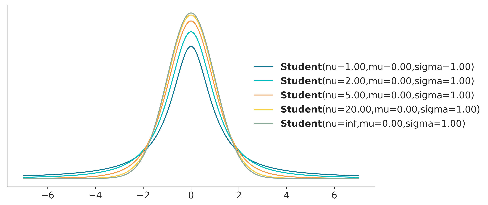
Ahora que conocemos la distribución t de Student, podemos usarla en nuestro modelo:
\[\begin{align} \mu &\sim U(l, h) \\ \sigma &\sim \mathcal{HN}(\sigma_h) \\ \nu &\sim Expon(\lambda) \\ y &\sim StudentT(\mu, \sigma, \nu) \end{align}\]
En algunos modelos puede ser buena idea sumar 1 a la distribución exponencial a fin de asegurarse que \(\nu \ge 1\) . En principio \(\nu\) puede tomar valores de [0, \(\infty]\), pero en mi experiencia valores de \(\nu < 1\) pueden traer problemas durante el muestreo, ya que pueden aparecer valores demasiado alejados de la media (las colas son extremadamente gordas!). Esto puede ocurrir con modelos con datos marcadamente aberrantes, veremos un ejemplo de esto en el capítulo 4.
Gráficamente:
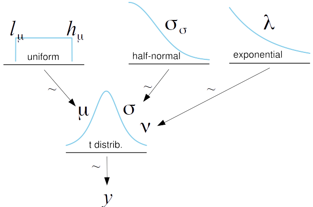
with pm.Model() as modelo_t:
# los a prioris
μ = pm.Uniform('μ', 240, 250)
σ = pm.HalfNormal('σ', sigma=100)
ν = pm.Exponential('ν', 1/30)
# el likelihood
y = pm.StudentT('y', mu=μ, sigma=σ, nu=ν, observed=datos)
idata_t = pm.sample()Auto-assigning NUTS sampler...
Initializing NUTS using jitter+adapt_diag...
Multiprocess sampling (4 chains in 4 jobs)
NUTS: [μ, σ, ν]
100.00% [8000/8000 00:02<00:00 Sampling 4 chains, 0 divergences]
Sampling 4 chains for 1_000 tune and 1_000 draw iterations (4_000 + 4_000 draws total) took 3 seconds.Comparemos las estimaciones entre ambos modelos
az.summary(idata_g)| mean | sd | hdi_3% | hdi_97% | mcse_mean | mcse_sd | ess_bulk | ess_tail | r_hat | |
|---|---|---|---|---|---|---|---|---|---|
| μ | 248.262 | 0.014 | 248.236 | 248.288 | 0.0 | 0.0 | 3807.0 | 2568.0 | 1.0 |
| σ | 0.110 | 0.010 | 0.093 | 0.128 | 0.0 | 0.0 | 3152.0 | 2502.0 | 1.0 |
az.summary(idata_t)| mean | sd | hdi_3% | hdi_97% | mcse_mean | mcse_sd | ess_bulk | ess_tail | r_hat | |
|---|---|---|---|---|---|---|---|---|---|
| μ | 248.274 | 0.006 | 248.261 | 248.286 | 0.000 | 0.000 | 3695.0 | 2895.0 | 1.0 |
| σ | 0.041 | 0.007 | 0.029 | 0.054 | 0.000 | 0.000 | 2413.0 | 2620.0 | 1.0 |
| ν | 2.599 | 0.922 | 1.178 | 4.280 | 0.019 | 0.013 | 2502.0 | 2569.0 | 1.0 |
En este caso, vemos que la estimación de \(\mu\) es muy similar entre los dos modelos, aunque la estimación de \(\sigma\), pasó de ser de ~10 a ~4. Esto es consecuencia de que la distribución t asigna menos peso a los valores alejados de la media que la distribución Gaussiana.
Hagamos un prueba predictiva a posteriori para el nuevo modelo.
ppc_t = pm.sample_posterior_predictive(idata_t, model=modelo_t)Sampling: [y]
100.00% [4000/4000 00:00<00:00]
az.plot_ppc(ppc_t, num_pp_samples=200)
plt.xlim(247, 250);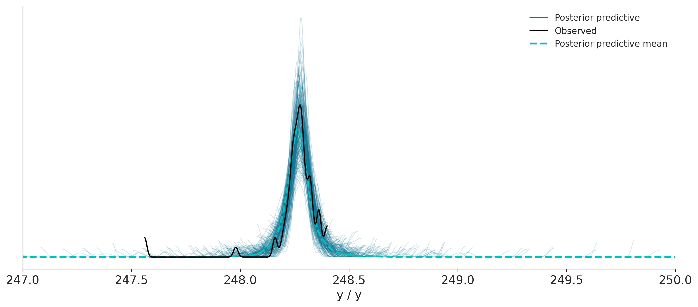
¿Qué conclusión se puede sacar de comparar esta prueba predictiva a posteriori con la anterior?
Accidentes mineros
Este ejemplo está tomado del tutorial de PyMC.
El problema es el siguiente, tenemos un registro del número de accidentes en minas de carbón, ubicadas en el Reino Unido, que ocurrieron entre 1851 y 1962 (Jarrett, 1979). Se sospecha que la aplicación de ciertas regulaciones de seguridad tuvo como efecto una disminución en la cantidad de catástrofes. Por lo tanto nos interesa averiguar el año en que la tasa cambió y nos interesa estimar ambas tasas.
Los datos son los siguientes, por un lado tenemos la variable accidentes que contiene la cantidad de accidentes por año y por el otro la variable años conteniendo el rango de años para los cuales tenemos datos. Si prestan atención verán que accidentes es un arreglo enmascarado (o masked array). Esto es un tipo especial de arreglo de NumPy donde cada elemento del arreglo contiene asociado un valor True o False el cual indica si el elemento debe o no ser usado durante cualquier tipo de operación. En este caso como faltan datos para dos años lo que se ha hecho es marcar esa falta de datos con un valor centinela de -999, esta es la forma de indicarle a PyMC la presencia de datos faltantes, alternativamente se pueden pasar los datos como un dataframe de Pandas conteniendo el valor especial NAN (que es el valor por defecto en Pandas para lidiar con datos faltantes).
Bien, pero para que molestarse con datos faltantes si en general es más fácil eliminarlos. una de las razones es que esto puede conducir a pérdida de información cuando por cada observación tenemos más de una variable o cantidad de interés. Por ejemplo si tenemos 50 sujetos a los que les hemos medido la presión, la temperatura y el ritmo cardíaco, pero sucede que para 4 de ellos no contamos con el datos de la presión (porque alguien se olvidó de medirlo o registrarlo, o porque el tensiómetro se rompió, o por lo que sea). Podemos eliminar esos cuatro sujetos del análisis y perder por lo tanto información sobre la presión y ritmo cardíaco, o podemos usar todos los datos disponibles y además estimar los valores de temperatura faltantes. En el contexto de la estadística Bayesiana los datos faltantes se tratan como un parámetro desconocido del modelo que puede ser estimado.
accidentes = pd.Series([4, 5, 4, 0, 1, 4, 3, 4, 0, 6, 3, 3, 4, 0, 2, 6,
3, 3, 5, 4, 5, 3, 1, 4, 4, 1, 5, 5, 3, 4, 2, 5,
2, 2, 3, 4, 2, 1, 3, np.nan, 2, 1, 1, 1, 1, 3, 0, 0,
1, 0, 1, 1, 0, 0, 3, 1, 0, 3, 2, 2, 0, 1, 1, 1,
0, 1, 0, 1, 0, 0, 0, 2, 1, 0, 0, 0, 1, 1, 0, 2,
3, 3, 1, np.nan, 2, 1, 1, 1, 1, 2, 4, 2, 0, 0, 1, 4,
0, 0, 0, 1, 0, 0, 0, 0, 0, 1, 0, 0, 1, 0, 1])
años = np.arange(1851, 1962)plt.plot(años, accidentes, '.')
plt.ylabel("Número de accidentes")
plt.xlabel("Año");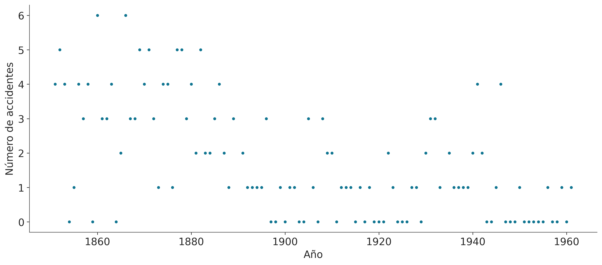
Para modelar los accidentes usaremos una distribución de Poisson. Como creemos que la cantidad media de accidentes es distinta antes y después de la introducción de regulaciones de seguridad usaremos dos valores de tasas medias de accidentes (\(t_0\) y \(t_1\)). Además deberemos estimar un punto de corte (\(pc\)) que dividirá los años para los cuales se aplica la tasa de accidentes \(t_0\) de los cuales se aplica la tasa \(t_1\):
\[\begin{equation} A_t \sim Poisson(tasa) \end{equation}\]
\[\begin{equation} tasa = \begin{cases} t_0, \text{si } t \ge pc,\\ t_1, \text{si } t \lt pc \end{cases} \end{equation}\]
Los a prioris que usaremos serán:
\[\begin{align} t_0 \sim Expon(1) \\ t_1 \sim Expon(1) \\ pc \sim U(A_0, A_1) \end{align}\]
Donde la distribucion uniforme es discreta y \(A_0\) y \(A_1\) corresponden al primer y último año considerado en el análisis respectivamente.
Gráficamente el modelo es:
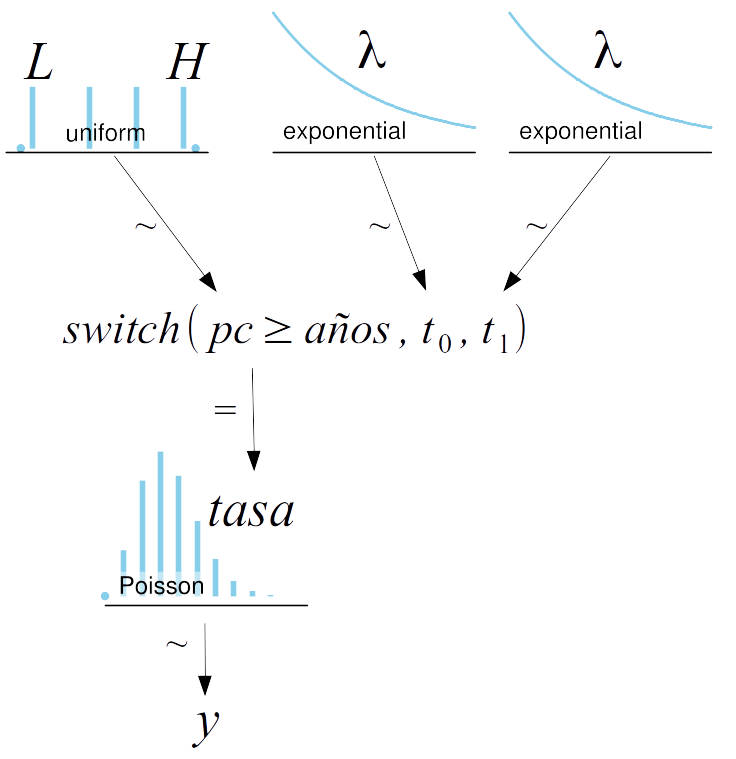
Una peculiaridad de la implementación de este modelo en PyMC es el uso de la función pm.switch (linea 10). Esta es en realidad una función de PyMC y equivale a un if else de Python. Si el primer argumento es True entonces devuelve el segundo argumento caso contrario el tercer argumento. Como resultado tenemos que tasa es un vector de longitud igual a la de años y cuyos elementos corresponden a una repetición \(t_0\) seguida de una repetición \(t_1\), la cantidad exacta de repeticiones de \(t_0\) y \(t_1\) está controlada por la condición \(pc \ge\) años. De esta forma, podemos al muestrear \(pc\), modificar que años reciben cual tasa para el cálculo del likelihood.
with pm.Model() as modelo_cat:
pc = pm.DiscreteUniform('pc', lower=años.min(), upper=años.max())
# Priors para las tasas antes y después del cambio.
t_0 = pm.Exponential('t_0', 1)
t_1 = pm.Exponential('t_1', 1)
# Asignamos las tasas a los años de acuerdo a pc
tasa = pm.Deterministic("tasa", pm.math.switch(pc >= años, t_0, t_1))
acc = pm.Poisson('acc', tasa, observed=accidentes)
idata_cat = pm.sample(1000, random_seed=1791)/home/osvaldo/anaconda3/envs/bayes/lib/python3.9/site-packages/pymc/model.py:1406: ImputationWarning: Data in acc contains missing values and will be automatically imputed from the sampling distribution.
warnings.warn(impute_message, ImputationWarning)
Multiprocess sampling (4 chains in 4 jobs)
CompoundStep
>CompoundStep
>>Metropolis: [pc]
>>Metropolis: [acc_missing]
>NUTS: [t_0, t_1]
100.00% [8000/8000 00:02<00:00 Sampling 4 chains, 0 divergences]
Sampling 4 chains for 1_000 tune and 1_000 draw iterations (4_000 + 4_000 draws total) took 2 seconds.ax = az.plot_posterior(idata_cat, var_names=["~tasa"], figsize=(12, 6));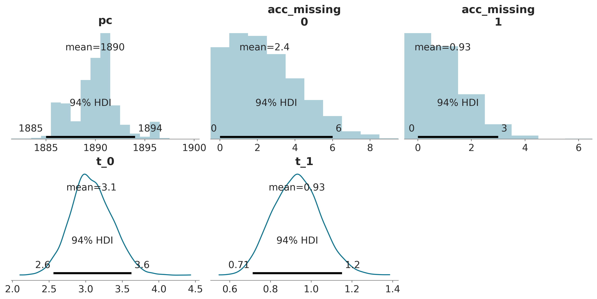
az.summary(idata_cat, var_names=["~tasa"])| mean | sd | hdi_3% | hdi_97% | mcse_mean | mcse_sd | ess_bulk | ess_tail | r_hat | |
|---|---|---|---|---|---|---|---|---|---|
| pc | 1889.971 | 2.430 | 1885.000 | 1894.000 | 0.168 | 0.119 | 224.0 | 232.0 | 1.01 |
| acc_missing[0] | 2.379 | 1.879 | 0.000 | 6.000 | 0.097 | 0.069 | 364.0 | 467.0 | 1.01 |
| acc_missing[1] | 0.931 | 0.983 | 0.000 | 3.000 | 0.038 | 0.028 | 704.0 | 827.0 | 1.00 |
| t_0 | 3.080 | 0.286 | 2.558 | 3.625 | 0.006 | 0.004 | 2130.0 | 2528.0 | 1.00 |
| t_1 | 0.929 | 0.118 | 0.712 | 1.151 | 0.002 | 0.002 | 3090.0 | 2802.0 | 1.00 |
tasa_mean = idata_cat.posterior['tasa'].mean(("chain", "draw"))
tasa_hdi = az.hdi(idata_cat.posterior["tasa"].values)
pc_hdi = az.hdi(idata_cat.posterior['pc'])["pc"]
_, ax = plt.subplots(figsize=(10, 5), sharey=True)
ax.plot(años, accidentes, '.')
ax.set_ylabel("Número de accidentes")
ax.set_xlabel("Año");
ax.vlines(idata_cat.posterior['pc'].mean(("chain", "draw")),
accidentes.min(),
accidentes.max(),
color='C1', lw=2)
ax.fill_betweenx([accidentes.min(), accidentes.max()], pc_hdi[0], pc_hdi[1], alpha=0.3, color='C1')
ax.plot(años, tasa_mean, 'k', lw=2);
ax.fill_between(años, tasa_hdi[:,0], tasa_hdi[:,1], alpha=0.3, color='k')
faltante0 = idata_cat.posterior["acc_missing"].sel(acc_missing_dim_0=0).mean(("chain", "draw"))
faltante1 = idata_cat.posterior["acc_missing"].sel(acc_missing_dim_0=1).mean(("chain", "draw"))
ax.plot(años[np.isnan(accidentes)], [faltante0, faltante1], "C2s");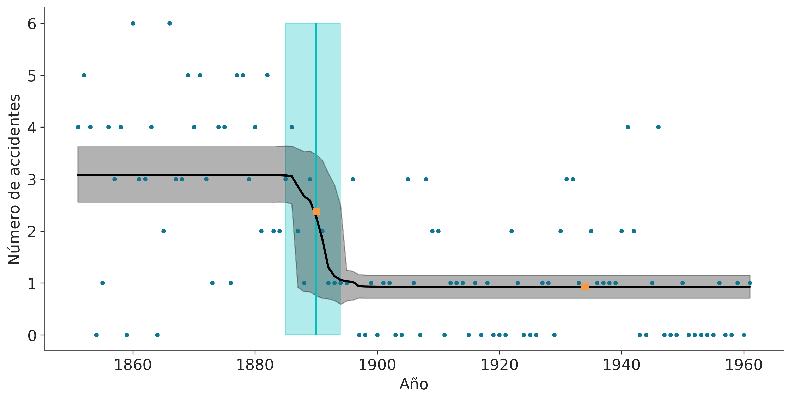
Pruebas predictivas a posteriori
La prueba consiste en comparar los datos observados con los datos predichos a partir del a posteriori.
Las pruebas predictivas a posteriori son pruebas de auto-consistencia. Este ejercicio nos permite evaluar si el modelo es razonable, la idea general no es determinar si un modelo es correcto o no ya que como dijo George Box “todos los modelos están equivocados, pero algunos son útiles”. El grado de confianza en la verosimilitud de los modelos ciertamente es distinta entre practicantes de distintas disciplinas científicas, en disciplinas como física cuando se estudian sistemas relativamente simples bajo condiciones experimentales extremadamente controladas y haciendo uso de teorías fuertes, es probable que se le asigne un alto grado de confianza a ciertos modelos. Pero esto no suele ser cierto en disciplinas como ciencias sociales o biología (aunque sospecho que la variabilidad encontrada en biología ¡es muy alta!). En el caso de contar con a prioris muy informativos la evaluación de un modelo también puede ser usado para evaluar si los propios datos son razonables, indicando que tal vez sea necesario conseguir nuevos datos o revisar como se obtuvieron los datos o como se procesaron.
En definitiva la principal utilidad de las pruebas predictivas a posteriori debería ser el permitirnos dar una segunda mirada, crítica, al modelo y tratar de entender la razón de discrepancias sistemáticas (si las hubiera), estas discrepancias nos pueden llevar a entender mejor los límites del modelo, abandonar el modelo por completo o tal vez mejorarlo.
Si bien se han desarrollado métodos formales o cuantitativos para realizar pruebas predictivas a posteriori, una aproximación que suele ser más informativa y simple de interpretar es realizar gráficas, como veremos a continuación.
Usando PyMC podemos calcular la distribución predictiva a posteriori de la siguiente forma
idata_cat.extend(pm.sample_posterior_predictive(idata_cat, model=modelo_cat, random_seed=1791))Sampling: [acc_observed]
100.00% [4000/4000 00:00<00:00]
Si bien es posible construir nuestras propias pruebas predictivas a posteriori, a continuación usaremos dos funciones de ArviZ.
_, ax = plt.subplots(1, 2, figsize=(12, 4))
az.plot_ppc(idata_cat, ax=ax[0])
ax[0].set_xlabel("acc")
az.plot_loo_pit(idata_cat, "acc_observed", ax=ax[1], use_hdi=True)
ax[1].set_yticks([]);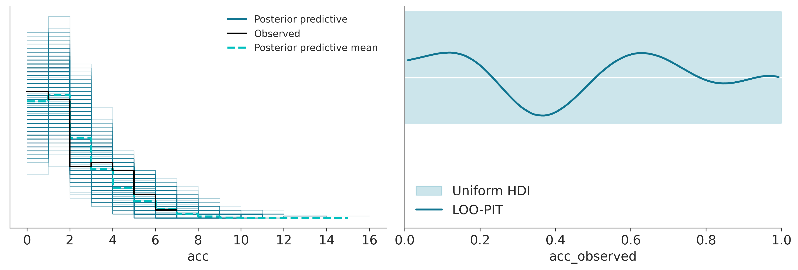
az.plot_ppc: Por defecto esta función representa los datos observados, varias muestras de la distribución predictiva a posteriori (predicciones) y la distribución media de estas muestras. Si los datos son discretos se usan histogramas, si los datos son continuos KDEs.az.plot_loo_pit: Muestra la diferencia entre datos observados y predichos (linea azul), de tal forma que si no hubiera diferencia obtendríamos una distribuión uniforme (linea blanca). En el eje x están los cuantiles de la distribución. Por lo que si hubiera diferencia alrededor de 0.5 esto implica diferencia alrededor de la mediana, si en cambio la diferencia estuviera entre 0 y 0.2 esto implicaría diferencias en la cola izquierda (primer 20% de la masa total de la distribución), etc. Si la curva está por encima de la linea blanca esto quiere decir que hay más observaciones que predicciones en esa región, y si la curva está por debajo lo contrario. El grafico muestra un banda, que indica las desviaciones esperadas respecto de la distribución uniforme para el tamaño de muestra dado. Cualquier diferencia dentro de esa banda es “esperable”.
Pruebas predictivas a priori
Las pruebas predictivas a prior son una forma de evaluar el modelo. Una vez definido un modelo Bayesiano se generan muestras a partir del mismo, pero sin condicionar en los datos \(\tilde{y}\), es decir se calcula la distribución posible de datos (sintéticos) sin haber visto los datos reales.
\[ p(y^\ast) = \int_{\Theta} p(y^\ast \mid \theta) \; p(\theta) \; d\theta \]
Los datos generados son predictivos ya que son los datos que el modelo esperara ver, es decir son datos no observados pero potencialmente observables. La prueba consiste en comparar los datos observados con el conocimiento previo que tenemos sobre el problema, ojo que NO se trata de comparar con los datos observados!
Las pruebas predictivas a priori son pruebas de consistencia con nuestro conocimiento previo. Este ejercicio nos permite evaluar si el modelo es razonable, en el sentido de si es capaz de generar datos que concuerdan con lo que sabemos de un problema. Por ejemplo un modelo del tamaño de planetas no es muy razonable si predice planetas de escala nanométrica o incluso de unos pocos kilómetros. Es importante destacar que dado suficiente cantidad y calidad de datos un modelo de este tipo podría dar resultados razonables, una vez condicionado a esos datos. Es decir el posterior podría no incluir, o asignar probabilidades despreciables a nanoplanetas.
En definitiva la principal utilidad de las pruebas predictivas a prior es la de permitirnos inspecticionar críticamente un modelo y tratar de entender el comportamiento del modelo las discrepancias con el conocimiento previo nos pueden llevarnos a entender mejor los límites del modelo, abandonar el modelo por completo o tal vez mejorarlo por ejemplo usando priors más angostos u otros likelihoods.
Usando PyMC podemos calcular la distribución predictiva a priori de la siguiente forma
idata_cat.extend(pm.sample_prior_predictive(model=modelo_cat, random_seed=1791))Sampling: [acc_missing, acc_observed, pc, t_0, t_1]_, ax = plt.subplots(2,2, figsize=(10, 6), sharey="row", sharex="col")
ax[0,0].plot(años[np.isfinite(accidentes)],
idata_cat.prior_predictive["acc_observed"].sel(draw=50).squeeze("chain").T, ".");
a_sample = idata_cat.prior.sel(draw=50)
coco = np.full_like(años, a_sample["t_1"].item(), dtype=float)
coco[a_sample["pc"]>=años] = a_sample["t_0"].item()
ax[0,0].step(años, coco)
ax[0,0].set_ylabel("número de accidentes")
az.plot_dist(idata_cat.prior_predictive["acc_observed"].sel(draw=50), ax=ax[0,1], rotated=True);
ax[1,0].plot(años[np.isfinite(accidentes)],
idata_cat.prior_predictive["acc_observed"].squeeze("chain").T, "C0.", alpha=0.05);
ax[1,0].set_ylabel("número de accidentes")
ax[1,0].set_xlabel("años")
az.plot_dist(idata_cat.prior_predictive["acc_observed"], ax=ax[1,1], rotated=True);
ax[1,1].set_xlabel("probabilidad");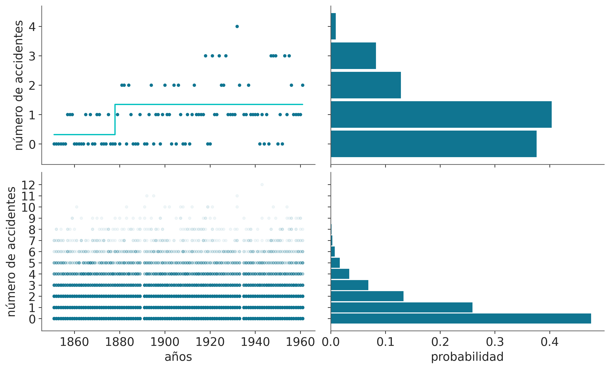
La primer fila de la figura anterior muestra una muestra de la distribución predictiva a priori. A la izquierda el número de accidentes por año (puntos azules). Y la tasa media en turquesa mostrando un valor de \(\approx 0.3\) antes de 1880 y 1.3 con posterioridad a esa fecha. A la derecha un histograma de la cantidad de accidentes.
La segunda fila muestra lo mismo pero agregado para las 500 muestras que le pedimos a PyMC. Se ve una distribución de accidentes uniforme a lo largo de los años, esto es esperable dado que hemos definido el mismo prior para ambas tasas. Además, podemos ver que nuestro modelo favorece valores relativamente bajos de accidentes por año con el 85% de la masa para valores iguales o menores a 3.
Comparando grupos
Una tarea común al analizar datos es comparar grupos. Podríamos estar interesados en analizar los resultados de un ensayo clínico donde se busca medir la efectividad de una droga, o la reducción de la cantidad de accidentes de tránsito al introducir un cambio en las regulaciones de tránsito, o el desempeño de estudiantes bajo diferentes aproximaciones pedagógicas, etc. Este tipo de preguntas se suele resolver en el marco de lo que se conoce como pruebas de hipótesis que busca declarar si una observación es estadísticamente significativa o no. Nosotros tomaremos una ruta alternativa.
Al comparar grupos debemos decidir que característica(s) vamos a usar. Una característica común es la media de cada grupo. En ese caso podemos calcular la distribución a posteriori de la diferencia entre medias. Para ayudarnos a entender este posterior usaremos 3 herramientas:
- Un posteriorplot con un valor de referencia
- Una medida llamada d de Cohen
- La probabilidad de superioridad
En el capítulo anterior ya vimos un ejemplo de cómo usar posteriorplot con un valor de referencia, pronto veremos otro ejemplo. Las novedades aquí son el d de Cohen y la probabilidad de superioridad, dos maneras populares de expresar el tamaño del efecto.
d de Cohen
Una medida muy común, al menos en ciertas disciplinas, para cuantificar el tamaño del efecto es el d de Cohen
\[ \frac{\mu_2 - \mu_1}{\sqrt{\frac{\sigma_2^2 + \sigma_1^2}{2}}} \]
De acuerdo con esta expresión, el tamaño del efecto es la diferencia de las medias con respecto a la desviación estándar combinada de ambos grupos. Ya que es posible obtener una distribución a posteriori de medias y de desviaciones estándar, también es posible calcular una distribución a posteriori de los valores d de Cohen. Por supuesto, si sólo necesitamos o queremos una estimación puntual, podríamos calcular la media de esa distribución a posteriori. En general, al calcular una desviación estándar combinada, se toma en cuenta el tamaño de la muestra de cada grupo explícitamente, pero la ecuación de d de Cohen omite el tamaño de la muestra, la razón es que tomamos estos valores del posterior (por lo que ya estamos considerando la incertidumbre de las desviaciones estándar).
Un d de Cohen es una forma de medir el tamaño del efecto donde la diferencia de las medias se estandariza al considerar las desviaciones estándar de ambos grupos.
Cohen introduce la variabilidad de cada grupo al usar sus desviaciones estándar. Esto es realmente importante, una diferencia de 1 cuando la desviación estándar es de 0.1 es muy grande en comparación con la misma diferencia cuando la desviación estándar es 10. Además, un cambio de x unidades de un grupo respecto del otro podría explicarse por cada punto desplazandose exactamente x unidades o la mitad de los puntos sin cambiar mientras la otra mitad cambia 2x unidades, y así con otras combinaciones. Por lo tanto, incluir las variaciones intrínsecas de los grupos es una forma de poner las diferencias en contexto. Re-escalar (estandarizar) las diferencias nos ayuda a dar sentido a la diferencia entre grupos y facilita evaluar si el cambio es importante, incluso cuando no estamos muy familiarizados con la escala utilizada para las mediciones.
Un d de Cohen se puede interpretar como un Z-score. Un Z-score es la cantidad de desviaciones estándar que un valor difiere del valor medio de lo que se está observando o midiendo, puede ser positivo o negativo dependiendo de si la diferencia es por exceso o por defecto. Por lo tanto, un d de Cohen de -1.2, indica que la media de un grupo está 1.2 desviación estándar por debajo de la media del otro grupo.
Incluso con las diferencias de medias estandarizadas, puede ser necesario tener que calibrarnos en función del contexto de un problema determinado para poder decir si un valor de d de Cohen es grande, pequeño, mediano, importante, despreciable, etc. Afortunadamente, esta calibración se puede adquirir con la práctica, a modo de ejemplo si estamos acostumbrados a realizar varios análisis para más o menos el mismo tipo de problemas, podemos acostumbrarnos a un d de Cohen de entre 0.8 y 1.2, de modo que si obtenemos un valor de 2 podría ser que estamos frente a algo importante, inusual (¡o un error!). Una alternativa es consultar con expertos en el tema.
Una muy buena página web para explorar cómo se ven los diferentes valores de Cohen’s es http://rpsychologist.com/d3/cohend. En esa página, también encontrarán otras formas de expresar el tamaño del efecto; algunas de ellos podrían ser más intuitivas, como la probabilidad de superioridad que analizaremos a continuación.
Probabilidad de superioridad
Esta es otra forma de informar el tamaño del efecto y se define como la probabilidad que un dato tomado al azar de un grupo tenga un valor mayor que un punto tomado al azar del otro grupo. Si suponemos que los datos que estamos utilizando se distribuyen de forma Gaussiana, podemos calcular la probabilidad de superioridad a partir de la d de Cohen usando la expresión:
\[\begin{equation} \label{eq_ps} ps = \Phi \left ( \frac{\delta}{\sqrt{2}} \right) \end{equation}\]
Donde \(\Phi\) es la distribución normal acumulada y \(\delta\) es el d de Cohen. Podemos calcular una estimación puntual de la probabilidad de superioridad (lo que generalmente se informa) o podemos calcular la distribución a posteriori. Si no estamos de acuerdo con la suposición de normalidad, podemos descartar esta fórmula y calcularla directamente a partir del posterior sin necesidad de asumir ninguna distribución. Esta es una de las ventajas de usar métodos de muestreo para estimar el a posteriori, una vez obtenidas las muestras lo que podemos hacer con ellas es muy flexible.
El conjunto de datos tips
Para explorar el tema de esta sección, vamos a usar el conjunto de datos tips (propinas). Estos datos fueron informados por primera vez por Bryant, P. G. and Smith, M (1995) Practical Data Analysis: Case Studies in Business Statistics.
Queremos estudiar el efecto del día de la semana sobre la cantidad de propinas en un restaurante. Para este ejemplo, los diferentes grupos son los días. Comencemos el análisis cargando el conjunto de datos como un DataFrame de Pandas usando solo una línea de código. Si no está familiarizado con Pandas, el comando tail se usa para mostrar las últimas filas de un DataFrame:
tips = pd.read_csv('datos/propinas.csv')
tips.tail()| total_bill | tip | sex | smoker | day | time | size | |
|---|---|---|---|---|---|---|---|
| 239 | 29.03 | 5.92 | Male | No | Sat | Dinner | 3 |
| 240 | 27.18 | 2.00 | Female | Yes | Sat | Dinner | 2 |
| 241 | 22.67 | 2.00 | Male | Yes | Sat | Dinner | 2 |
| 242 | 17.82 | 1.75 | Male | No | Sat | Dinner | 2 |
| 243 | 18.78 | 3.00 | Female | No | Thur | Dinner | 2 |
Para este ejemplo solo vamos a usar las columnas day y tip y vamos a usar la función plot_forest de ArviZ. Aún cuando ArviZ está pensado para análisis de modelos Bayesianos algunos de sus funciones pueden ser útiles para analizar datos.
az.plot_forest(tips.pivot(columns='day', values='tip').to_dict('list'),
kind='ridgeplot',
hdi_prob=1,
figsize=(12, 4));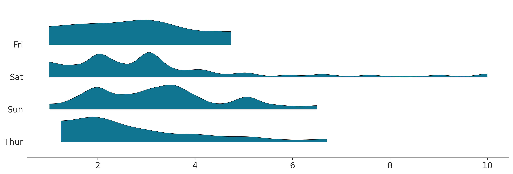
A fin de simplificar el análisis vamos a crear 2 variables: * La variable categories contiene los nombres de los días (abreviados y en inglés) * La variable idx codifica los días de la semana como enteros entre 0 y 3.
categories = np.array(['Thur', 'Fri', 'Sat', 'Sun'])
tip = tips['tip'].values
idx = pd.Categorical(tips['day'], categories=categories).codesEl modelo para este problema es basicamente igual a model_g, con la diferencia que \(\mu\) y \(\sigma\) ahora serán vectores en vez de escalares. La sintáxis de PyMC es super-útil para estos caso, en vez de usar for loops escribimos el modelo de forma vectorizada, para ello especificamos el argumento shape para los priors \(\mu\) y \(\sigma\) y para el likelihood usamos la variable idx para indexar de forma adecuada \(\mu\) y \(\sigma\) para asegurar que usamos los parámetros correctos para cada grupo. En este ejemplo un \(\mu\) para jueves, otra para viernes, otra para sábado y una cuarta para domingo, y lo mismo para \(\sigma\).
with pm.Model() as comparing_groups:
μ = pm.Normal('μ', mu=0, sigma=10, shape=4)
σ = pm.HalfNormal('σ', sigma=10, shape=4)
y = pm.Normal('y', mu=μ[idx], sigma=σ[idx], observed=tip)PyMC provee una sintaxis alternativa, la cual consisten en especificar coordenadas y dimensiones. La ventaja de esta alternativa es que permite una mejor integración con ArviZ.
Veamos, en este ejemplo tenemos 4 valores para las medias y 4 para las desviaciones estandard, y por eso usamos shape=4. El InferenceData tendrá 4 indices 0, 1, 2, 3 correspondientes a cada uno de los 4 días. Pero es trabajo del usuario asociaer esos indices númericos con los días.
Al usar coordendas y dimensiones nosotros podremos usar los rótulos 'Thur', 'Fri', 'Sat', 'Sun' para referirnos a los parámetros relacionados con cada uno de estos días. ArviZ también podrá hacer uso de estos rótulos. Vamos a especificar dos coordenadas days con las dimensiones 'Thur', 'Fri', 'Sat', 'Sun' y “days_flat” que contendrá los mismo rótulos pero repetidos según el órden y longitud que corresponda con cada observación. Esto último será útil para poder obtener pruebas predictivas a posteriori para cada día.
coords = {"days": categories, "days_flat":categories[idx]}
with pm.Model(coords=coords) as comparing_groups:
μ = pm.HalfNormal('μ', sigma=5, dims="days")
σ = pm.HalfNormal('σ', sigma=1, dims="days")
y = pm.Gamma('y', mu=μ[idx], sigma=σ[idx], observed=tip, dims="days_flat")
idata_cg = pm.sample()
idata_cg.extend(pm.sample_posterior_predictive(idata_cg))Auto-assigning NUTS sampler...
Initializing NUTS using jitter+adapt_diag...
Multiprocess sampling (4 chains in 4 jobs)
NUTS: [μ, σ]
100.00% [8000/8000 00:02<00:00 Sampling 4 chains, 0 divergences]
Sampling 4 chains for 1_000 tune and 1_000 draw iterations (4_000 + 4_000 draws total) took 3 seconds.
Sampling: [y]
100.00% [4000/4000 00:00<00:00]
Una vez obtenido un a posteriori podemos hacer todos los análisis que creamos pertinentes con el. Primero hagamos una prueba predictiva a posteriori. Vemos que en general somos capaces de capturar la forma general de las distribuciones, pero hay detalles que se nos escapan. Esto puede deberse al tamaño relativamente pequeño de la muestra, a que hay otros factores además del día que tienen influencia en las propinas o una combinación de ambas. Por ahora seguiremos con el análisis considerando que el modelo es lo suficientemente bueno
_, axes = plt.subplots(2, 2)
az.plot_ppc(idata_cg, num_pp_samples=100, coords={"days_flat":[categories]}, flatten=[], ax=axes);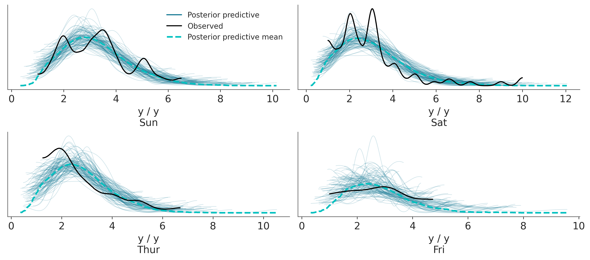
Podemos ver la distribución de cada uno de los parámetros haciendo
az.plot_posterior(idata_cg, var_names="μ", figsize=(12, 3));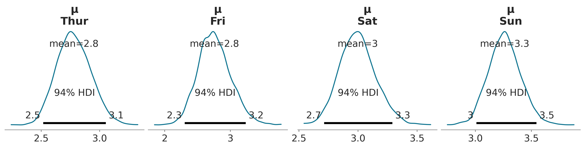
La figura anterior es bastante informativa, por ejemplo vemos que los valores medios de las propinas son de unos pocos centavos y que para los domingos el valor es ligeramente más alto que para el resto de los días analizados.
Pero quizá consideramos que puede ser mejor mostrar los datos de otra forma. Por ejemplo podemos calcular todas las diferencias de medias a posteriori entre si. Además podríamos quere usar alguna medida del tamaño del efecto que sea popular entre nuestra audiencia, como podrían ser la probabilidad de superioridad o d de Cohen.
Cohen’s d
\[ \frac{\mu_2 - \mu_1}{\sqrt{\frac{\sigma_1^2 + \sigma_2^2}{2}}} \]
- Se puede interpretar como un z-score. Cuántas desviaciones estándar una media de un grupo está por encima (o por debajo) de la media del otro grupo
- Ejemplo interactivo
Probabilidad de superioridad
- La probabilidad que un dato tomado de un grupo sea mayor que la de un dato tomado del otro grupo.
- Si suponemos que los datos se distribuyen normalmente, entonces:
\[\begin{equation} \label{eq_ps} ps = \Phi \left ( \frac{\delta}{\sqrt{2}} \right) \end{equation}\]
\(\Phi\) es la cdf de una distribución normal \(\delta\) es el valor del Cohen’s d.
Con el siguiente código usamos plot_posterior para graficar todas las diferencias no triviales o redundantes. Es decir evitamos las diferencias de un día con sigo mismo y evitamos calcular ‘Fri - Thur’ si ya hemos calculado ‘Thur- Fri’. Si lo vieramos como una matriz de diferencias solo estaríamos calculando la porción triangular superior.
cg_posterior = az.extract(idata_cg)
dist = stats.norm()
comparisons = [(categories[i], categories[j]) for i in range(4) for j in range(i+1, 4)]
_, axes = plt.subplots(3, 2, figsize=(13, 9), sharex=True)
for (i, j), ax in zip(comparisons, axes.ravel()):
means_diff = cg_posterior['μ'].sel(days=i) - cg_posterior['μ'].sel(days=j)
d_cohen = (means_diff /
np.sqrt((cg_posterior['σ'].sel(days=i)**2 +
cg_posterior['σ'].sel(days=j)**2) / 2)
).mean().item()
ps = dist.cdf(d_cohen/(2**0.5))
az.plot_posterior(means_diff.values, ref_val=0, ax=ax)
ax.set_title(f"{i} - {j}")
ax.plot(0, label=f"Cohen's d = {d_cohen:.2f}\nProb sup = {ps:.2f}", alpha=0)
ax.legend(loc=1)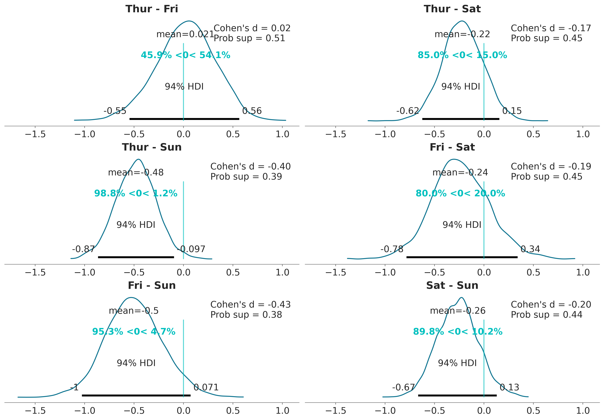
Una forma de interpretar estos resultados es comparando el valor de referencia con el intervalo HDI. De acuerdo con la figura anterior, tenemos solo un caso cuando el 94% HDI excluye el valor de referencia de cero, la diferencia en las propinas entre el jueves y el domingo. Para todos los demás ejemplos, no podemos descartar una diferencia de cero (de acuerdo con los criterios de superposición de valores de referencia de HDI). Pero incluso para ese caso, ¿es una diferencia promedio de ≈0.5 dólares lo suficientemente grande? ¿Es suficiente esa diferencia para aceptar trabajar el domingo y perder la oportunidad de pasar tiempo con familiares o amigos? ¿Es suficiente esa diferencia para justificar promediar las propinas durante los cuatro días y dar a cada mozo/a la misma cantidad de dinero de propina? Este tipo de preguntas es crucial para interpretar los datos y/o tomar decisiones, pero las respuestas no las puede ofrecer la estadística de forma automática (ni ningún otro procedimiento). La estadística solo pueden ayudar en la interpretación y/o toma de decisiones.
Nota: Dependiendo del público el gráfico anterior puede que esté demasiado “cargado”, quizá es útil para una discusión dentro del equipo de trabajo, pero para un público en general quizá convenga sacar elementos o repartir la información entre una figura y una tabla o dos figuras.
Resumen
Aunque la estadística Bayesiana es conceptualmente simple, los modelos probabilísticos a menudo conducen a expresiones analíticamente intratables. Durante muchos años, esta fue una gran barrera que obstaculizó la adopción amplia de métodos Bayesianos. Afortunadamente, la matemática, la física y la informática vinieron al rescate en forma de métodos numéricos capaces, al menos en principio, de resolver cualquier inferencia. La posibilidad de automatizar el proceso de inferencia ha llevado al desarrollo de los lenguajes de programación probabilista que permiten una clara separación entre la definición del modelo y la inferencia.
PyMC es una librería de Python para programación probabilística con una sintaxis simple, intuitiva y fácil de leer que también está muy cerca de la sintaxis estadística utilizada para describir modelos probabilísticos. En este capítulo introducimos PyMC revisando el problema de la moneda que vimos en el capítulo anterior. La diferencia es que no tuvimos que derivar analíticamente la distribución a posteriori. Los modelos en PyMC se definen dentro de un bloque with; para agregar una distribución de probabilidad a un modelo, solo necesitamos escribir una línea de código. Las distribuciones se pueden combinar y se pueden usar como priors (variables no observadas) o likelihoods (variables observadas). En la sintaxis de PyMC la única diferencia entre ambas es que para esta última debemos pasar los datos usando el argumento observed. Si todo va bien las muestras generadas por PyMC serán representativas de la distribución a posteriori y por lo tanto serán una representación de las consecuencias lógicas del modelo y los datos.
ArviZ es una librería que nos ayuda a explorar los modelos definidos por PyMC (u otroas librerías como PyStan, TFP, BeanMachine, etc). Una forma de usar el posterior para ayudarnos a tomar decisiones es comparando la ROPE con el intervalo HDI. También mencionamos brevemente la noción de funciones de pérdida, una aproximación formal para cuantificar los costos y beneficios asociados a la toma de decisiones. Aprendimos que las funciones de pérdida y las estimaciones puntuales están íntimamente asociadas.
Hasta este momento todos los ejemplos estuvieron basado en modelos con un solo parámetro. Sin embargo PyMC permite, en principiop, usar un número arbitrario de parámetros, esto lo ejemplificamos con un modelo Gaussiano y luego una generalización de este, el modelo t de Student. La distribución t de Student suele usarse como alternativa a la Gaussiana cuando queremos hacer inferencias robustas a valores aberrantes. Pronto veremos cómo se puede usar estos modelos como para construir regresiónes lineales.
Finalizamos comparanod medias entre grupos, una tarea común en análisis de datos. Si bien esto a veces se enmarca en el contexto de las pruebas de hipótesis, tomamos otra ruta y trabajamos este problema como una inferencia del tamaño del efecto.
Para seguir leyendo
La documentación de PyMC tiene varios ejemplos de como usar este librería y modelos de distinto tipo.
Probabilistic Programming and Bayesian Methods for Hackers de Cameron Davidson-Pilon y varios otros contribuidores. Originalmente escrito en PyMC2 ha sido portado a PyMC
While My MCMC Gently Samples. Un blog de Thomas Wiecki, desarrollador de PyMC.
Statistical Rethinking by Richard McElreath es probablemente el mejor libro introductorio de estadística Bayesiana. El libro usa R/Stan. Pero varias personas hemos contribuido para portar el código a Python/PyMC
Doing Bayesian Data Analysis de John K. Kruschke es otro libro introductorio bastante accesible. La mayoría de los ejemplos de la primer edición están disponibles en Python/PyMC y de la segunda edición acá.
Ejercicios
Usando PyMC reproducí los resultados del primer capítulo para el problema de la moneda (use los 3 priors usados en ese capítulo).
Reemplazá la distribución beta por una uniforme en el intervalo [0, 1] ¿Cómo cambia la velocidad del muestreo? ¿Y si se usas un intervalo más ámplio, como [-3, 3]?
Para el
modelo_g. Usá una Gaussiana para la media, centrada en la media empírica. Probá modificar la desviación estándard de ese prior ¿Cuán robusto/sensible son los resultados a la elección del prior?La Gaussiana es una distribución sin límites es decir es válida en el intervalo \([-\infty, \infty]\), en el ejemplo anterior la usamos para modelar datos que sabemos tienen límites ¿Qué opinas de esta elección?
Usando los datos de la velocidad de la luz, calculá la media y desviación estándar con y sin los outilers, compará esos valores con los obtenidos con el
modelo_gy con elmodelo_t.Modificá el modelo de las propinas para usar una distribución t de Student, probá usando un solo \(\nu\) para los cuatro grupos y también usando un valor de \(\nu\) por grupo.
Calculá la probabilidad de superioridad a partir de las muestras del posterior (sin usar la formula de probabilidad de superioridad a partir de la d de Cohen). Comparar los resultados con los valores obtenidos a analíticamente.
Aplica al menos uno de los modelos visto en este capítulo a datos propios o de tu interés.